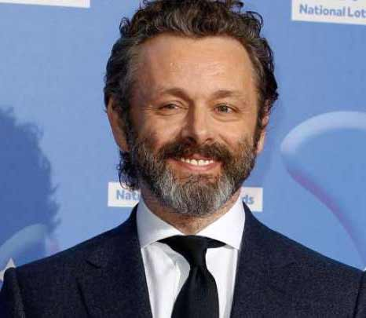

sypnosis
Episode 1: In The Beginning
The angel Aziraphale and demon Crowley meet for the first time at the Garden of Eden as Adam and Eve are expelled after Crowley tempted them with an apple. Fast forward to 11 years before Armageddon. Crowley is told to deliver the Antichrist to a satanic convent, where the baby will be given to an American diplomat and his family. However, a mix-up occurs and the Antichrist ends up with a middle-class English family, the Youngs. Crowley and Aziraphale meet to discuss the coming apocalypse. Meanwhile, the hellhound has found his master, Adam Young, raised as a normal boy in the village of Tadfield. Adam’s desire to have a small, smart dog he can teach tricks to transforms the hellhound into a small terrier whom Adam names “Dog”, unknowingly initiating Armageddon.
Episode 2: The Book
Aziraphale assures his superiors Gabriel and Sandalphon that all is well with the Antichrist. A parcel delivery man is sent to gather the Four Horsemen of the Apocalypse; War, in the form of a war correspondent, receives an ancient sword. In 1656, the prophetess Agnes Nutter is burned at the stake by Witchfinder Thou-Shalt-Not-Commit-Adultery Pulsifer; Agnes causes an explosion, killing everyone present. Her book, "The Nice and Accurate Prophecies of Agnes Nutter, Witch", is left to her family and passed through the generations. Agnes’ descendant, American occultist Anathema Device, is charged with learning the prophecies and saving the world. Pulsifer’s descendant, Newton, meets Shadwell, a modern-day witchfinder. Aziraphale and Crowley learn that all records were destroyed in a fire. Aziraphale and Crowley collide with Anathema on the road and give her a lift home. She forgets her book in Crowley’s car and Aziraphale reads it, realizing he holds the key to finding the Antichrist.
Episode 3: Hard Times
Aziraphale and Crowley's relationship is revealed through a series of historical events, ranging from Noah's Ark through 1960s Soho. Along the way, they cross paths in Ancient Rome, Medieval England, Shakespeare's Globe Theatre.The two strike up an arrangement to each do some of the other's work when possible, saving time and travel. Adam and Dog find Anathema, upset at losing her book, and she discusses environmental issues such as the danger of nuclear power plants. Fascinated, Adam leaves with various paranormal magazines to read. Aziraphale and Crowley separately contract Shadwell to locate the Antichrist. Aziraphale tries to tell Gabriel, Sandalphon, and Uriel about the "hypothetical" lost Antichrist; they brush off his concerns but wonder about his loyalty. The second Horseman, Famine, in the form of Dr. Raven Sable, receives a set of scales. Adam's latent powers cause a nuclear reactor to vanish.
Episode 4: Saturday Morning Funtime
Adam’s dreams bring several magazine articles to life. Aziraphale fails to convince Gabriel to stop Armageddon, and his superiors question Aziraphale’s loyalty after seeing proof of his meetings with Crowley. The angel Michael contacts Hell, causing trouble for Crowley, who tries to talk Aziraphale into leaving Earth together. The last two Horsemen, Pollution and Death, are summoned. When Warlock’s family arrives in Megiddo for the next step toward Armageddon, the demon Hastur realizes Crowley lied about the Antichrist. Confronting Crowley at his apartment, the demon Ligur is disintegrated by holy water and Hastur is trapped in Crowley's answering machine. Aziraphale phones Crowley, admitting he knows where the Antichrist is, and Crowley races to meet him. At his bookshop, Aziraphale talks with God in the form of the Metatron. Mistaken by Shadwell for a demon, Aziraphale is discorporated and summoned to Heaven. Stunned, Shadwell unknowingly knocks over a candle, igniting the bookshop.
Episode 5: The Doomsday Option
Crowley races through London only to find the bookshop in flames, with no sign of Aziraphale. In Heaven, Aziraphale refuses to join the war and, determined to stop Armageddon, leaves without a body. He finds Crowley, who has salvaged the copy of Agnes’ book in which Aziraphale left information about the Antichrist, and they arrange to meet at Tadfield Air Base. Aziraphale inhabits Madame Tracy's body during a seance and convinces her and Shadwell to help stop Armageddon. Crowley is stuck on the M25 as a ring of fire surrounds London. . Crowley races his Bentley through the flames. Adam comes fully into his powers, scaring away his friends and Dog. This final rejection returns Adam to his "human self". After finding a particular prophecy, Anathema and Newt arrive at the air base, joining Shadwell, Aziraphale/Madame Tracy, Adam, and his friends. The Four Horsemen arrive and take over the base's global communications hub. Crowley arrives in his flaming Bentley blasting rock music very epically.
Episode 6: The Very Last Day of the Rest of Their Lives
Adam separates Aziraphale from Madame Tracy, and his friends defeat War, Pollution, and Famine, while Death takes his leave. Beelzebub and Gabriel arrive to ensure Adam starts Armageddon in accordance with the Great Plan, but he refuses. Aziraphale and Crowley suggest to their superiors that what they want may be part of the Great Plan, but perhaps not the Ineffable Plan. Both sides reluctantly stand down. Satan emerges but is renounced by Adam, who restores the world, including Aziraphale's bookshop, Crowley's Bentley, and the lives recently lost.Aziraphale is ordered to be destroyed by a hellish flame and Crowley is forced to enter a tub of holy water. To everyone's shock, both survive. Afraid of what Crowley and Aziraphale have become, their superiors agree to leave them alone on Earth. There, Aziraphale and Crowley re-exchange their outer appearances, having swapped to survive their sentences, a plan inspired by Agnes’ final prophecy. The series ends with Aziraphale and Crowley enjoying lunch at the Ritz.
Cast
-
David Tennant
As Crowley
-
 Michael Sheen
As Aziraphale